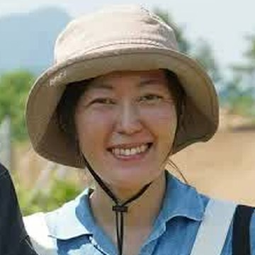
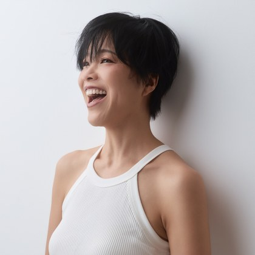

オーガニックを扱う、
お店・畑・サロン・講師・専門職の方へ
「オーガニックって、
結局なんですか？」
オーガニックを扱う、
お店・畑・サロン・講師・専門職の方へ
「オーガニックって、
結局なんですか？」
世界の定義と背景から、オーガニックの全体像を学び、「私はこう考える。だから、これを届けたい」と自分の言葉で話すための最初の授業を、無料で公開します。
ドイツの大学院・食品研究所で有機農業を研究し、延べ1,900人以上が学ぶスクールを創立したレムケなつこの初回授業です。
伝えられないのは、話し方が下手だからではありません。オーガニックの全体像が、自分の中で一本につながっていないからです。
全体像がつながると、「私はこう考える。だから、これを届けている」と、自分の言葉で話せるようになります。
登録後すぐに、授業動画のページをご案内するメールが届きます。届かない場合は、迷惑メールフォルダをご確認ください。このあと、オーガニックの届け方についてのメールをお送りします。配信はいつでも解除できます。
BEFOREこんな経験、ありませんか
WHYなぜ、言葉に詰まるのか
本を読んで、講座に出て、認証も調べて、発信も続けてきた。それでも「これです」と言い切れない。足りないのは、努力ではありません。
オーガニックは、種から生産、加工、流通、そして食卓までが、一本につながっている分野です。どこか一箇所だけ詳しくなっても、全体の判断はできません。断片をいくら集めても、自分の基準にはならないんですね。
伝え方を学ぶ前に、
判断軸を持つ。
全体像が一本につながると、聞かれたことに知識を並べるのではなく、自分の考えから話せるようになります。
FREE LESSON無料でお渡しする授業
ドイツIOBオーガニックスクール
オーガニックを、
自分の言葉で伝えるための
最初の授業
お渡しするのは、この授業動画1本です。
「オーガニック＝健康にいいもの」。そんな断片的な理解から一歩抜けて、なぜ生産・流通・消費、そして社会までが一本につながっているのかを、整理していきます。
だから次に聞かれたとき、知識を並べるのではなく、「私はこう考えています。だから、これを届けています」と話す土台ができます。
AFTER
この一本で目指す、最初の変化
次に聞かれたとき、自分の言葉で答えるために。
登録後すぐに見られます
VOICE受講生の声

川田むつみさん
オーガニックスーパー経営（千葉県松戸市）
お客様から「オーガニックって何ですか？」と尋ねられるたびに、自信を持って答えることができませんでした。
エビデンスに基づいて学んだ知識が、オーガニック商品を扱う経営者としての「軸」になりました。
今は、ブレずに自信を持って伝えられます。

村田枝里さん
有機農家・料理人（北海道・余市町）
オーガニックが、世界で起きている問題の解決策になる。その気持ちは、もともとありました。
学んで、知識があるということは、たくさんの選択肢の中から自分の人生を決めていけることだとわかりました。
その決意が、揺るがないものになりました。

柳田夕希さん
ピラティス講師／オーガニック酵素ドリンクの製造販売
オーガニックは、美容や健康にいいもの。それしか知りませんでした。
社会全体を幸せにする仕組みなんだと学んで、自分の中で大きな気づきがありました。
学んでいなかったら、ビジネスも成り立っていなかったと思います。
書籍とインタビュー動画で本人が語った言葉を、短くまとめています。
PROFILEこの授業をつくった人

レムケなつこ
ドイツ在住オーガニック教育の専門家
ドイツIOBオーガニックスクール創立者
20代の頃、JICAの一員としてボリビアとメキシコで、途上国の生産者支援に携わりました。豊かな国の暮らしが誰かの犠牲の上に成り立っている、その不条理を変えたいと論文を読み漁るなかで、オーガニックという「仕組み」に出会いました。確かめるためにドイツへ渡り、いまもここで暮らしています。
ドイツ・アルゴイ地方の暮らし
MISSION応援の循環
オーガニックは、生産から消費まで、関わるすべての命が幸せでいられるようにする「仕組み」です。その仕組みは、一人が知ることから、こうして広がっていきます。
オーガニックの全体像が、自分の中で一本につながる
「私はこう考える。だから、これを届けている」と話せる
あなたの考えに、うなずいてくれる人が出てくる
選ぶ理由が「あなただから」に変わっていく
続いた事業から、オーガニックがまた次の誰かに届く
一人の言葉が、次の一人の選択を変える。
その循環を育てるために、私はこのスクールを続けています。
レムケなつこ
「オーガニックが、
あたりまえ。」な社会へ
オーガニックが広がるには、一人の専門家が発信し続けるより、それぞれの地域で、自分の言葉で伝える人が増えるほうが強いからです。
あなたの言葉から、また次の一人へ。
その最初の一本を、受け取ってください。
登録後すぐに、授業動画を無料でお届けします。配信はいつでも解除できます。